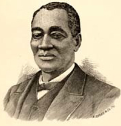

|
Slaves entered Kentucky with the first white settlers. Slaves explored the Ohio
River valley with Christopher Gist in 1751 and crossed the mountains with Daniel
Boone in 1760. They led the wagons of the first settlers, carried their
supplies, and tended their livestock. When attacked by Indians, Kentucky's slave
pioneers fought bravely, lining up side by side with their masters, sharing
their victories and defeats.
It is difficult to ascertain the number of slaves in Kentucky during the
pioneer period, but the earliest census at Fort Harrod in 1777 indicated that
9.6 percent of its inhabitants were blacks. By 1800 Kentucky's slaves were 18.3
percent of the population and continued to grow until 1830, when 165,213 slaves
comprised 24 percent of the Commonwealth's inhabitants. Thereafter, the
percentage of slaves declined steadily, and in 1860 only 19.5 percent of the
state's population were slaves although the absolute number increased to
225,483. Most of Kentucky's bondsmen lived in the Bluegrass region, where, by
the 1850s, a number of counties were more than 40 percent slave. The other
centers of slave population lay along the Ohio River and the tier of counties of
south central Kentucky from the Ohio River to the Tennessee border. Almost all
the counties in the latter area experienced a steady growth in their slave
population during the forty years before the Civil War. The counties of eastern
and southeastern Kentucky had the smallest slave populations.
A surprisingly large percentage of Kentucky's slaves resided in towns and
villages. In the Bluegrass area, where the largest farms existed, the percentage
of slaves living in towns was about the same as, or slightly greater than, the
percentage living in the counties. The same held true for the other large
slaveholding areas. The percentage of slaves living in towns in small
slaveholding counties often was higher than the percentage for the entire
county. The total urban population for the state, however, never was large.
The relationship between Kentucky slaves and masters was uniquely personal,
though one clearly was in bondage and the other free. Slaves and their masters
cleared the forests together, built their homes together, and reared their
families together. The vast majority of Kentucky's slaves toiled in agriculture,
and many worked alongside their masters, helping to transform the Kentucky
wilderness into a civilized community. The average slaveholder in the
Commonwealth owned about five slaves, and only 12 percent owned more than
twenty. Nevertheless, profits were higher throughout the state on farms where
larger numbers of slaves labored. Fewer than 30 percent of white Kentucky
families held slaves.
Kentucky's slaves were more than just farm laborers or domestic servants. The
predominance of small farms and the unsuitability of Kentucky soil for the
labor-intensive crops of the Deep South freed Kentucky slaves for various types
of work. Males worked as handymen, carpenters, brick masons, factory workers,
longshoremen, waiters, and cattlemen. Slave women wove and dyed cloth, sewed
clothes, and nursed the sick. Possessing such skills often led to a slave's
being hired out for a short period of time or even annually. Though open to
potential abuse, the hiring-out system also provided hired slaves a measure of
independence. They usually gained leverage with their employer, who stood to
lose if the slave's work was interrupted. And hiring out often brought slaves
bonuses or opportunities to earn extra money. Slave hiring increased steadily in
the late antebellum period and sometimes provided Kentucky bondsmen a step
toward freedom.
Living conditions for Kentucky slaves depended largely upon the prosperity of
their owners and their willingness to share with their bondsmen, but some of the
slave's comfort in life depended upon his own initiative. Most slaves lived in a
one-room, dirt floor log cabin with a single window. Furniture often consisted
of a slab of lumber across boxes to make a table or a wall peg for a closet.
Children usually slept on a trundle bed or in the loft on a shuck mattress or a
pile of straw. Cover consisted of old, ragged clothes or a worn-out quilt.
Slaves received no luxuries, few conveniences, and very little privacy. Urban
slaves often lived in the home of their owners or resided in servants' quarters
on the alley behind their master's house.
Slaves cooked over an open fireplace that also served as their source of heat
in winter. The food provided by their owners frequently was repetitious--meat,
meal, and molasses. Such standard rations were monotonous but usually wholesome.
Most slaves supplemented their diet from their own vegetable gardens where they
grew beans, potatoes, greens, cabbage, and corn. Additional variety came from
hunting, fishing, and picking wild berries or other fruit from the woods. Though
some slaves complained in their memoirs of a "mush and milk" diet, most
described their sustenance as good. This fact was confirmed by the Civil War
physical examinations that revealed remarkably healthy Kentucky black recruits.
The vast majority of Kentucky slaves wore homespun clothes made from coarse
woolen, cotton, linen, or flaxen material colored by dye extracted from
sassafras bark or wild berries. Though the quality of clothes varied from farm
to farm, in general Kentucky slaves were poorly clothed, especially children,
who usually wore little more than a "tow-cloth" shirt until they were six or
seven years old. Many slave owners doled out clothes annually, often at
Christmas, and most slaves went without shoes from spring to late fall. Slaves
frequently supplemented their wardrobe with extra money earned working at odd
jobs at night or on weekends.
The family was the central institution in slave society. Slaves fell in love
and married just as their owners did, but there the similarity ended. Bondsmen
had to have permission of their owners to live together because Kentucky law did
not recognize slave marriages. Owners could sell either partner or the offspring
of the marriage at any time, and frequently did. The easiest slave marriage
occurred when two slaves on the same farm united, but a large number of partners
lived on separate farms. Though on isolated farms cohabitation marriages were
the norm, most Kentucky slaves preferred standing before a slave minister when
they married. Slave wedding ceremonies were often the biggest and most
meaningful events in the slave community, and occasionally slave owners provided
elaborate celebrations for the couple and their friends. The slave family proved
to be remarkably resilient.
|

Kentucky minister and author Elisha Green
|
In their recollections many former slaves remembered a home where no male was
present. For others, fathers often lived on nearby farms and visited their
family one or two nights a week or on weekends. Still others wrote of their
mothers and fathers as the strongest personalities in their lives. Alexander
Walters, who rose from slavery to become a renowned Methodist minister, wrote
that his mother taught him the meaning of justice and his father gave him a
hopeful spirit in spite of slavery. Many slaves grew up in a stable slave
community where they regularly saw their grandparents, aunts, and uncles. They
often told of a childhood during which they played happily with the brothers,
sisters, cousins, their owner's children, and visited other relatives in the
neighborhood. Henry Bibb, one of Kentucky's most famous fugitives, exaggerated
when he wrote that it was "almost impossible" for a Kentucky slave to trace his
or her ancestry.
There was, however, a darker side for the Kentucky slave family. Slavery
remained, after all, a capitalistic system of labor predicated upon profits, and
separation of families by owners for financial gain or to relieve economic
pressure was an ever-present possibility. For many slaves the destruction of
their families constituted the most devastating aspect of Kentucky slavery.
Slaveholders sold children only six years old and advertised the sale of
children even younger. Newspapers regularly carried advertisements for mothers
and their young children to be sold together, and on occasion separately. Elisha
Green, one of Kentucky's most famous post-Civil War Baptist ministers, described
in his memoirs the agony he and his wife suffered when they witnessed the sale
of their teenage son "down the river." Isaac Johnson, after being auctioned off
at age eleven, stood hitched to a post and watched as one buyer purchased his
mother and another his four-year-old brother.
Though most slaves were sold regionally, Kentuckians carried on a growing
slave trade with the Deep South. An 1833 law prohibiting the importation of
slaves into Kentucky for resale probably diminished Kentucky's slave traffic.
But declining profits from slave labor in the Commonwealth and rising prices for
slaves in the Cotton Belt led to the law's repeal in 1849. Thereafter, Kentucky
became a slave emporium. Slave traders in Louisville and Lexington, who
regularly advertised their need for slaves for the Southern market, maintained
large jails where they held their purchases until they were taken south. Smaller
traders went from town to village purchasing slaves to fill their orders. Most
white Kentuckians felt a need to denounce slave traders, their slave "pens," and
the Southern trade, but without significant effect. Slave coffles moving
southward on Kentucky roads and rivers were a frequent sight throughout
slavery's existence.
As harsh as the system seemed, the nature of bondage in Kentucky occasionally
allowed slaves to affect their own destiny. Some slaves received permission to
find someone to purchase them rather than face the uncertainty of auction.
Others occasionally donated their life's savings to a neighborhood white to be
applied toward the purchase of a loved one to prevent his or her being sold
south. In the case of George Dupee, a Lexington Baptist minister, the members of
his church persuaded the white pastor of the First Baptist Church to buy Dupee
when he was placed at auction, preventing his being sold away from his church
and family. For years thereafter, the treasurer of the black church paid
installments to Dupee's benefactor until the debt was erased. Other slaves were
less fortunate. In 1860 Nancy Lee scoured Lexington unsuccessfully to find local
buyers for her teenage granddaughters whose "freedom papers" had been lost or
stolen. No one in Lexington intervened as slave traders purchased the girls and
carried them off to the Deep South.
The strength of the slave family also can be seen in efforts of slaves to
maintain contact with loved ones from whom they were separated. Slaves freed to
emigrate to Liberia often wrote their Kentucky relatives, and occasionally
slaves sold to the Deep South sent letters inquiring about their family. More
frequently, Kentucky slaves ran away to return to their friends and family. Even
Kentucky fugitives in Canada occasionally corresponded with their relatives or
former masters. The desire to see relatives was the major cause of running away.
Other slaves, when allowed, visited their kinsmen who lived in various parts of
Kentucky or even in the Deep South, and at least one Kentucky slave ran away to
New Orleans in search of his wife.
State and local laws strictly regulated the movement of slaves, and the vast
majority of slave owners attempted to enforce the system rigidly. Slaves could
not be away from their homes for more than four hours without a pass. Common
carriers were under threat of a fine for allowing a slave to travel illegally.
Passes usually described the holder, the task he was attending to for his owner,
and the time he was to be home. Some masters, however, gave their slaves
open-ended passes, allowing them to go and come as they pleased.
The local slave patrol served as the primary agency for enforcing
restrictions on slaves, and much of the harshness associated with that system
can be attributed to the unscrupulous whites who too often constituted the
majority of its members. Blacks viewed the patrol as less a system of law and
order than an instrument of harassment or even sadistic abuse. Several factors,
however, made it very difficult for white Kentuckians to control the mobility of
slaves. The laws aimed at limiting mobility were loosely applied and unevenly
enforced. Some slaves claimed that they were never stopped by patrols though
they traveled extensively. The rural nature of Kentucky society and the absence
of adequate roads, along with the fact that most slaves knew their neighborhood
as well as the patrollers, made it difficult to police the counties thoroughly.
Many slaves thus found it relatively easy to travel in their neighborhoods, with
or without their owner's approval, especially at night.
Slavery in Kentucky never was so harsh as to prevent recreation from being an
important part of the lives of the bondsmen. Slaves used their voices and their
physical dexterity, and, on occasion, made their work a social event. Children
played hide-and-seek around the cabins in the evening while their parents
pitched horseshoes, played musical instruments, danced, and sang songs. Most
Kentucky slaves, after finishing their tasks on Saturday afternoon, were free to
use the remainder of the day and Sunday as they pleased. Men hunted or fished
while the women visited neighbors or participated in quilting bees. Weekends
also provided slaves an opportunity to "resort to the woods" where they held
such athletic contests as boxing and wrestling, and dancing "frolics" where
liquor sometimes flowed. In many parts of Kentucky slave frolics occurred
simultaneously with those of their white owners. Former slave Robert Anderson,
however, remembered preferring the separate, secret slave dances of his "own
particular race" where slaves expressed their innermost feelings. Slaves who
lived near towns frequently spent their Sunday afternoons riding around in
rented carriages or buying ice cream or sodas at local stores. Christmas to New
Year was the longest holiday period slaves enjoyed. Bondsmen usually received
special food allotments from their owners. Slave children looked forward to a
stick of hard candy in addition to Christmas gifts their parents provided.
To preserve his labor force, it was in the owner's best interest to provide
for the health care of his slaves. The rural nature of Kentucky society required
that someone on the farm, usually the farmer's wife, administer health care for
whites and blacks alike. Farmers depended on patent medicines as a first line of
defense against illness, but when these failed, slaveholders usually called in a
physician. Many slaves also utilized folk remedies when they or their children
were ill. State law required that slave owners provide for the infirm, aged, and
insane. While it is clear that most did, there is some evidence that masters
occasionally sold seriously ill slaves in order to evade responsibility. The
fact that the percentage of slaves who lived past age fifty was smaller than the
corresponding figure for Kentucky whites suggests the effect not only of a
harsher life but also of inferior health care.
Most slaves and slaveholders believed that bondage was less harsh in Kentucky
than in the Deep South, a view reinforced by the testimony of foreign visitors
to the Commonwealth. This idea arose partially from Kentucky's low owner-slave
ratio, which reportedly made the master-slave relationship more personal than
that generally present in the lower South. But the proximity of Kentucky to free
territory also served to ameliorate slave treatment by offering slaves faced
with unreasonable treatment the option of running away. Kentucky law promised
punishment for slaveholders who engaged in abusive or inhumane behavior toward
the slaves. Most masters treated their bondsmen, as Lexington fugitive slave
Jonathan Thomas phrased it, "as well as the nature and condition of servitude
permits." The character and personality of the slave owner, the accommodation of
the slave to bondage, the slave's expectations in life-all were important
variables regarding treatment. But the economic value of slaves provided their
best protection against abuse. Most slaves quickly learned that the key to good
treatment, as a Tompkinsville slave explained, was for slaves to "do what their
masters told them to do." Slaves usually developed a good working relationship
with their masters, and as a result, most survived and a few even prospered.

An advertisement for a sale of slaves in Kentucky
|
As benign as Kentuckians, black and white, believed slavery to be, there
were, nevertheless, famous instances of severe abuse. Violations of farm rules
typically meant punishment, and many slaves reported severe whippings that left
their backs cut and bleeding. The body of a female Lexington slave examined at
the workhouse after her owner was charged with abuse revealed abrasions,
contusions, and burns. In 1855 a Bourbon County court confiscated and sold the
slaves of a couple who severely beat and tortured a slave and her daughter. And
in 1837 in Lexington the wife of a judge pushed a slave from a second-story
window, resulting in a broken arm, leg, and a severe spinal injury.
Justice administered to slaves by the state was separate and unequal.
Conviction for a misdemeanor led to thirty-nine stripes, with death the
punishment for a felony. Slaves charged with crimes frequently were subjected to
pressure to confess and were convicted on hearsay evidence, mere suspicion, or
the fact that testimony against them originated from whites. Nevertheless, on
paper at least a Kentucky slave had a right to an informal defense by his master
in a court of law.
Many slaves accepted their condition, believing it could be changed only by
degrees. They engaged in passive resistance to their owner's will, destroyed
property, or even engaged in violence. Others, however, rejected bondage
outright. They agitated for voluntary emancipation by their owners, worked
nights and weekends to purchase their freedom, or fled to free territory.
Deciding to run away to the North and freedom posed an extremely difficult
decision for Kentucky bondsmen, one that only a small number made. It meant
leaving the security of family and friends for the unknown, possibly even death.
Those slaves who fled generally did so during a period of uncertainty in their
lives. They resented changing work rules, objected to unusually harsh
punishment, or feared being sold to the Deep South. Successful escape often
depended on the sophistication of the runaway; the more thoughtful the plan, the
greater the possibility of acquiring freedom. Most fugitives made the difficult
part of the escape--traversing Kentucky and crossing the Ohio River--without
outside assistance. They fled on their own, followed unfamiliar roads, sometimes
lived off wild berries and stolen food, and almost always experienced hardships.
When fugitives arrived north of the Ohio River, they inevitably sought out the
assistance of their free black brethren. For most Kentucky fugitives, the
underground railroad began north of the Ohio River. Once securely free, many
fugitives initiated efforts to purchase the freedom of loved ones left behind in
the Commonwealth. And some even returned to Kentucky clandestinely to rescue
members of their family.
For slaves who spent their lives in Kentucky, the church constituted the
single most important institution outside the home. Most slaves attended white
churches--a slave minister sometimes pastored the black flock with a white man
present--where they were second-class members and where the religious message
urged obedience to their masters. Though religious services represented the most
integrated aspect of slave life, blacks preferred to form separate churches that
became the center of their social activities and educational opportunities.
Their churches provided black Kentuckians a refuge from white domination.
Beginning with the First African Baptist Church in Lexington in 1801, separate
black congregations increased until they were common by the 1840s in Kentucky's
larger towns.
Black churches provided a valuable leadership training ground that made
antebellum black preachers the strongest leaders in the slave community. Though
never totally free from white interference and oversight, black preachers and
their congregations objected to white domination of their church affairs and
demanded the right to govern their churches and to determine their own spiritual
values. Strong personalities--such as Henry Adams, the pastor of Fifth Street
Baptist Church in Louisville, and Elisha Green of the African Baptist Church of
Paris--often dominated the thinking of the black community and won the respect
of the whites.
Black churches engaged in numerous self-help benefits for the black
community. Some of the larger churches established day schools that provided a
small number of their children a rudimentary education. Others opened their
doors for night schools, built church libraries, or used their Sunday schools to
teach their pupils to read the Bible. Churches also provided singing classes,
concerts, and lectures for their members. In addition, they held fairs and
benefits to raise money for church projects, the poor, and the infirm.
The growth of emancipation, the increasing tendency to hire out slaves, and
the acceleration of the Southern slave trade diminished the importance of
slavery in Kentucky during the 1850s. By the outbreak of the Civil War,
Kentucky's slaves, many of whom had been aware of the rising sectional
controversy, exhibited a spirit of unrest. Though a time of tremendous trial for
most Kentucky blacks, the Civil War afforded many slaves their first opportunity
to protest their condition. They became, slaveholders noticed, less malleable
and more independent. Many of the most trusted male servants were the first to
run off to join the Union army, followed soon after by their wives and children
who sought the protection of Union refugee camps such as the one established at
Camp Nelson. Kentucky's black soldiers helped impress other slaves, and
eventually over 28,000 Kentucky slaves served in the Union army. By war's end
they, and 75,000 of their family members, had been freed by the federal
government. The Civil War essentially doomed slavery in Kentucky, but its
official demise came with the ratification of the Thirteenth Amendment, December
18, 1865.
Source: Randall M. Miller and John David Smith, eds. Dictionary of
Afro-American Slavery (Westport, CT: Praeger, 1997), 383-90.
|